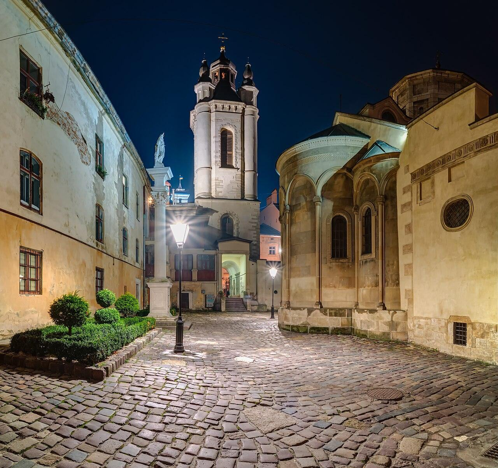

⭐ Найпопулярніша⏱ 2,5 год👣 3 кмСерце Львова: Ринок і старе місто
Площа Ринок і її кам'яниці, Латинський і Вірменський собори, приховані дворики і легенди, які знають тільки місцеві.
Площа РинокВірменська вулицяДворикиФотостоп
1 500 ₴за групу
Обрати